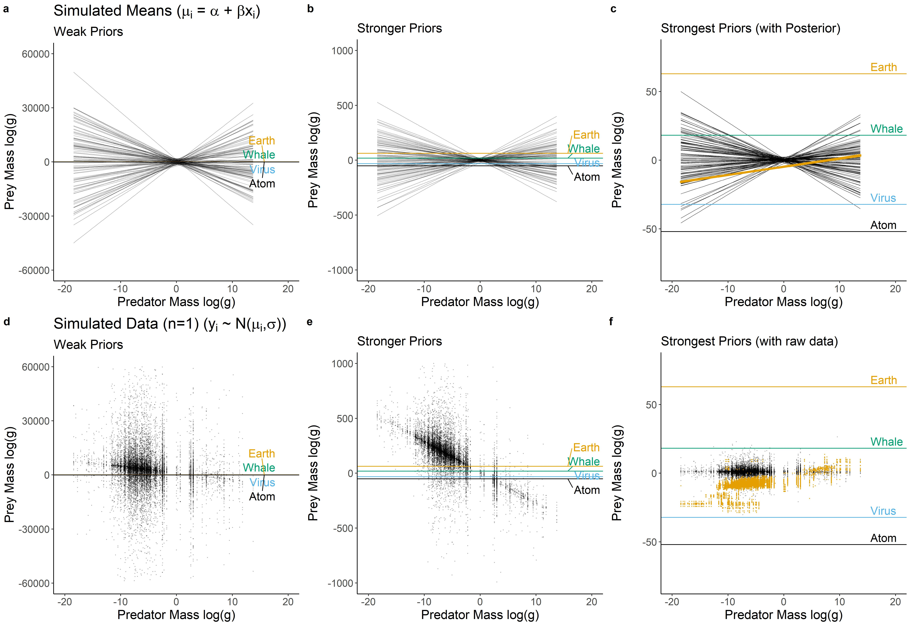
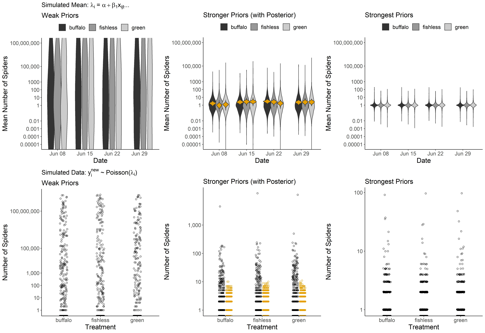
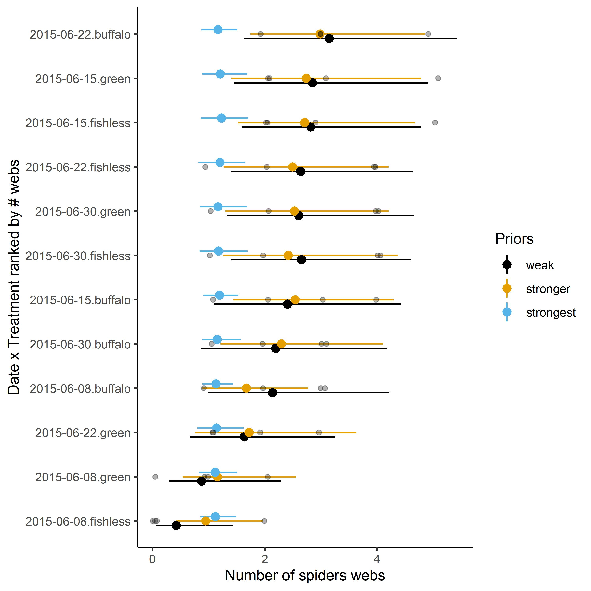

Choosing priors in Bayesian ecological models by simulating from the prior predictive distribution
Jeff S. Wesner and Justin P.F. Pomeranz
University of South Dakota, Department of Biology, Vermillion, SD 57069
Abstract
Bayesian data analysis is increasingly used in ecology, but prior specification remains focused on choosing non-informative priors (e.g., flat or vague priors). One barrier to choosing more informative priors is that priors must be specified on model parameters (e.g., intercepts, slopes, sigmas), but prior knowledge often exists on the level of the response variable. This is particularly true for common models in ecology, like generalized linear mixed models, which may have a link function and dozens of parameters, each of which needs a prior distribution. We suggest that this difficulty can be overcome by simulating from the prior predictive distribution and visualizing the results on the scale of the response variable. In doing so, some common choices for non-informative priors on parameters can easily be seen to produce biologically impossible values of response variables. Such implications of prior choices are difficult to foresee without visualization. We demonstrate a workflow for prior selection using simulation and visualization with two ecological examples (predator-prey body sizes and spider responses to food competition). This approach is not new, but its adoption by ecologists will help to better incorporate prior information in ecological models, thereby maximizing one of the benefits of Bayesian data analysis.
Keywords: Bayesian, prior predictive distribution, GLMM, simulation
Introduction
The distinguishing feature between Bayesian and non-Bayesian statistics is that Bayesian statistics treats unknown parameters as random variables governed by a probability distribution, while non-Bayesian statistics treats unknown parameters as fixed (Ellison 2004, Hobbs and Hooten 2015). A common misconception is that only Bayesian statistics incorporates prior information. However, non-Bayesian methods can and often do incorporate prior information, either informally in the choices of likelihoods and model structures, or formally as penalized likelihood or hierarchical modeling (Hobbs and Hooten 2015, Morris et al. 2015).
While prior information is not unique to Bayesian models, it is required of them. For example, in a simple linear regression of the form \(y \sim N(\alpha + \beta x, \sigma)\), the intercept \(\alpha\), slope \(\beta\), and error \(\sigma\) are unknown parameters that need a prior probability distribution. There are differing opinions and philosophies on the best practices for choosing priors (Lindley 1961, Edwards et al. 1963, Morris et al. 2015, Wolf et al. 2017, Lemoine 2019, Banner et al. 2020, Gelman et al. 2017). In ecology, a common practice is to assign so-called non-informative priors that effectively assign equal probability to all possible values using either uniform or diffuse normal priors with large variances (Lemoine 2019). These priors allow Bayesian inference to proceed (i.e. produce a posterior distribution), but with presumably limited influence of the priors (Lemoine 2019).
Reasons for using non-informative priors are varied but are at least in part driven by a desire to avoid the appearance of subjectivity and/or a reliance on default settings in popular software (Gelman and Hennig 2017, Banner et al. 2020). There are several arguments against this approach. First, “non-informative” is a misnomer. All priors influence the posterior distribution to some extent (Hobbs and Hooten 2015). As a result, a prior cannot just be assumed as non-informative based on default settings or a wide variance (Seaman III et al. 2012). Its implications for the model should be checked just like any other subjective assumption in data analysis, whether Bayesian or not (Banner et al. 2020, Gelman et al. 2017). Second, adhering to non-informative priors removes a major potential benefit of Bayesian analysis, which is to explicitly incorporate prior research and expertise into new science (Hobbs and Hooten 2015, Lemoine 2019, Rodhouse et al. 2019). Third, informative priors can help to reduce spurious conclusions due to errors in magnitude or sign of an effect by treating extreme values in the data skeptically (Gelman et al. 2012, Lemoine 2019). Finally, informative priors make computational algorithms like MCMC run more efficiently, which can save hours or days of computing time in complex models (Hobbs and Hooten 2015).
While there are clear arguments for why ecologists should use more informative priors, it is often difficult to know how to use them. Even for seemingly simple and routine models, like logistic or Poisson regression, it can be difficult to understand a priori how priors affect the model, because they must be assigned in the context of likelihood with a linearizing link-function (Seaman III et al. 2012, Gelman et al. 2017). In other words, prior specification takes place on model parameters (e.g., slopes, intercepts, variances), but prior knowledge is often easier to assess on the model outcomes (Kadane et al. 1980, Bedrick et al. 1996, Gabry et al. 2019). This is particularly true for the types of models that are commonly used in ecology, such as generalized linear mixed models with interactions, which may have dozens of parameters and hyperparameters, each of which require a prior probability distribution (Bedrick et al. 1996, McElreath 2020).
We suggest that ecologists can address this problem by simulating from the prior predictive distribution and visualizing the implications of the priors on outcomes of interest (e.g., means and confidence intervals of treatment groups, simulated data, or regression lines). In this paper, we demonstrate this approach using two case studies with ecological data. All data and code are available at: https://github.com/jswesner/prior_predictive.
Prior Predictive Simulation
An attractive feature of the Bayesian approach is that the models are generative. This means that we can simulate potential data from the model so long as the parameters are assigned a proper probability distribution (Gelman et al. 2013). This feature is routinely used to check models and prior influence after fitting the data using the posterior predictive distribution (Lemoine 2019, Gelman et al. 2020), but it can also be used before seeing the data using the prior predictive distribution (Gabry et al. 2019).
The general workflow for prior predictive simulation is:
Draw N values from different prior distributions
For each draw, simulate a model outcome or new data from the likelihood
Plot the results
Use domain knowledge to assess whether simulated values reflect prior knowledge
If simulated values do not reflect prior knowledge, change the prior distribution, likelihood, or both and repeat the simulation from step 1
If simulated values reflect prior knowledge, add the data and estimate the posterior distribution
This amounts to a prior predictive check to satisfy the expectation that “simulations from the full Bayesian model…should be plausible data sets” (Kennedy et al. 2019). We demonstrate it with two motivating examples.
Example 1: Predator-Prey Body Sizes - Simple Linear Regression
Data - Understanding predator-prey interactions has long been a research interest of ecologists. Body size is related to a number of aspects that influence these interactions. For example, predators are often gape-limited, meaning that larger predators should be able to eat larger prey. The data set of Brose et al. (2006) documents over 10,000 predator-prey interactions, including the mean mass of each.
Model - We examined the hypothesis that the prey body mass increases log-linearly with predator body mass using a simple linear model:
\[\begin{align} \text{log} (y_i) \sim N(\mu_i, \sigma)\\ \mu_i = \alpha + \beta \text{ log}(x_i)\\ \alpha \sim Normal(0, \sigma_{\alpha})\\ \beta \sim Normal(0, \sigma_{\beta})\\ \sigma \sim Exponential(\phi) \end{align}\]
where \(\text{log}(y_i)\) is natural log transformed prey mass and \(\text{log}(x_i)\) is natural log transformed predator mass.
Priors - For the \(\alpha\) and \(\beta\) priors, we first assign a mean of 0 with a “non-informative” standard deviation of 1000 [\(N(0, 1000)\)] (Table 1). The mean of 0 in a normal distribution implies that the intercept and slope have equal probability of being positive or negative. There is nothing special about this prior, but it was a common default setting in earlier Bayesian software to generate “flat” prior distributions and is commonly used in the ecological literature (McCarthy and Masters 2005, Banner et al. 2020). For the exponential distribution, we specify an initial \(\phi\) of 0.00001, chosen by plotting 100 simulations from the exponential function in R (R Core Team 2020) with varying values of \(\phi\) [e.g., plot(rexp(100, 0.00001)]. A value of 0.00001 generated an average deviance of ~1,000 with values up to ~5,000, indicating the possibility of producing extremely large values.
After simulating regressions from these initial priors, we specified successfully tighter priors and repeated the simulations (Table 1; Figure 1). Those simulations were compared to reference points representing prior knowledge (Mass of earth, a Blue Whale, a virus, and a Carbon-12 atom). The goal was to use these reference points to find a joint prior distribution that produced reasonable values of potential prey masses. We did this using two levels of the model (\(\mu_i\) and \(y_i\)). For \(\mu_i\), we simulated 100 means across each value of \(x_i\) and plotted them as regression lines. For \(y_i\), we simulated a fake data set containing simulated values of log prey mass for each of the 13,085 values of log predator mass (\(x_i\)) in the Brose et al. (2006) data.
Results - The weak “non-informative” priors make nonsense predictions (Figure 1a-c). In Figure 1a, all of the lines are impossibly steep, suggesting that predators could plausibly eat prey that are larger than earth or smaller than an atom. The stronger priors in Figure 1b suffer from the same problem, though the effect is less severe. The strongest priors (Figure 1c) produce more reasonable predictions, though they are still quite vague, with positive probability that predators could eat prey larger than an adult Blue Whale. The simulated fake data sets tell a similar story (Figure 1d-f), but with the added influence of \(\sigma\) (Equation 1).
We fit the model using the strongest prior set and overlaid these on the prior simulations (Figure 1c,f). As expected, there is a strong positive relationship between log predator and log prey size (Figure 1c - orange line), despite the uncertainty in the prior. The intercept is -4.8 ± 0.04 (mean ± sd), the slope is 0.6 ± 0.01, and sigma is 3.7 ± 0.02. Simulated data show a wide range of predator-prey size pairings, but all are within a reasonable range compared to prior predictions (Figure 1f).
There are several benefits to choosing a stronger prior. First, it is difficult to justify the two weakest priors on biological grounds. They place large amounts of prior probability on impossible values. This can matter when priors need to be justified to a granting agency or to reviewers. More critically, specification of priors can have conservation or legal implications, and the ability to justify priors with simulation helps to improve transparency (Crome et al. 1996, Banner et al. 2020). Stronger priors also improve computational efficiency (McElreath 2020). We fit these models using the brms package (Burkner 2017). The models with stronger or strongest priors were up to 50% faster than the model with weak priors, taking 56 vs 28 seconds on a standard laptop (compilation time + warmup time + sampling time). For more complex models that take longer to run, this improvement can save hours or days of computing time.
Caveats - We know from the literature that predators are generally larger than their prey by 2-3 orders of magnitude (Trebilco et al. 2013). Therefore, it would make sense to alter the prior mean of the intercept to a value below zero, perhaps using an average predator/prey mass comparison from the literature. That is apparent from the prior versus posterior comparison in Figure 1c. Similarly, the fact that larger predators tend to eat larger prey is well-known, so the prior on the slope \(\beta\) could be changed to a positive mean. Another option is to standardize the data prior so that the regression slopes can be interpreted as units of standard deiation (McElreath 2020).
Example 2: Spider Abundance - Generalized Linear Mixed Model
Data - This data set comes from Warmbold and Wesner (2018), who measured terrestrial spider resposes to different combinations of freshwater fish using fish enclosure cages in a backwater of the Missouri River, USA. They hypothesized that fish would reduce the emergence of adult aquatic insects by eating the larval stages in the water, causing a reduction in terrestrial spiders that feed on the adult forms of those insects. The original experiment contained six treatments. Here, we present a simplified version comparing spider abundance above three treatments that contain either Smallmouth Buffalo (Ictiobus bubalus), Green Sunfish (Lepomis cyanellus), or a fishless control. Each treatment had four replicates for a total of 12 cages (each 2.3 m\(^2\)). The number of occupied spider webs above each cage was counted on four dates over the 29-day experiment.
Model - We fit a generalized linear mixed model with a Poisson likelihood, since the response variable (# webs) is a non-negative integer. The predictor variables were date, treatment, and a date x treatment interaction with a random intercept for cages. Describing the model as having two main effects and an interaction is deceptively simple. In reality, the model has 13 parameters that require a prior specification: 11 “fixed” effects that indicate all combinations of date x treatment, plus 1 intercept and a hyperprior \(\phi\) on the intercept:
\[\begin{gather} y_i \sim Poisson(\lambda_i)\\ \text{log} (\lambda_i) = \alpha + \alpha_{[cage]} +\beta_1x_{trt_i = fishless} + \beta_2x_{trt_i = green} + ...\beta_{11}x_{trt_i = green:date_i = 4}\\ \alpha \sim Normal(0, \sigma_{\alpha})\\ \alpha_{[cage_{1-12}]} \sim N(0, \sigma_{cage})\\ \beta_{1...11} \sim Normal(0, \sigma_{\beta_{1...11}})\\ \sigma_{cage} \sim Exponential(\phi) \end{gather}\]
where each \(y_i\) is described by a Poisson distribution with mean \(\lambda_i\). Because the likelihood is not normal, we specify a log link - \(\text{log}(\lambda_i)\) - so that the mean can be estimated as a linear function of predictors. The intercept \(\alpha\) represents the predicted log mean number of spiders in the treatment with Smallmouth Buffalo on the first sample date. The choice of reference treatment is arbitrary. Choosing Smallmouth Buffalo and the first date as the intercept is the default choice in R (R Core Team 2020) because the treatment is coded first alphabetically (“buffalo”) and first numerically (“2015-06-08”).
Priors - As before, we simulated outcomes under three model scenarios, each with different priors (Table 1; Figure 2a-c). Another complication in this model is the log-link, which changes the biological interpretation of the parameters. With a Poisson likelihood and log-link, parameter values must be exponentiated and then interpreted as a multiplier. Thus, a value of 1.5 for the \(\beta_x\) indicates that the treatment contains exp(1.5) = 4.5 times more spiders than the reference treatment on the first sample date. This is an example of the principle that the prior can only be understood in the context of the likelihood (Gelman et al. 2017).
Results - If all we knew was that spiders were counted above 2.32 m\(^2\) cages but we did not know anything else about the experiment (i.e. the ecosystem, the question, the spider taxa), then we could still use the prior predictive distribution to select more informative priors. The weakest priors place substantial probabilities on values of >100,000 spiders per cage on average (Figure 2a), and include a small number of predictions on the final sample date with more than 100 million spiders (Figure 2c). We looked up the range of spider masses (~0.0005 to 170 grams). If we assume our spiders are relatively small, say 0.01 grams, then 100 million spiders would equal 30 tons of spiders. This is approximately equal to the mass of ~6 adult hippopotamus’s (each ~4 tons).
However, in this case we do have prior information. In a previous study using the same cages in the same backwater, Warmbold (2016) counted between 0 and 2 spiders per cage. The present experiment had a slightly different design, in which a small rope was added to the center of each cage to increase the area of attachment (Warmbold and Wesner 2018). If we assume that the rope will double the number of spiders that could colonize, then it seems reasonable to expect ~ 4 spiders per cage. There is obvious error associated with this, since the experiment was conducted in a different year and a different month. For that reason, we chose the moderate prior (Figure 2b,d) to use in the final model. It places most of the prior probability on values between ~1 to 100 spiders, but also allows for some extreme possibilities of >1000 spiders per cage (Figure 2d). The strongest priors also appear reasonable, placing most of the prior probability between ~1 to 10 spiders, while allowing for up to ~100 spiders in extreme cases (Figure 2c,e).
Figure 2b,e shows the results after fitting the model to data. Spider counts ranged from 0 to 5 spiders per cage, resulting in mean spider densities of ~1 to 4 spiders among the date x treatment combinations (Supplementary Data). Simulating from the prior and posterior predictive distributions shows the model predictions for the number of spiders we might expect at a new cage (i.e. a cage sampled from this site at another time). Before seeing the data, the model suggested reasonable probabilities of collecting 10 to >100 spiders. After seeing the data, the model suggests that finding ~10 or more spiders would be surprising (Figure 2e).
In addition to the computational and logical benefits of stronger priors as mentioned above, the stronger prior specifications in this model have a clear influence on the posterior (Figure S1). In particular, the stronger prior used in the model is more conservative, pulling the posterior means away from extreme high or low values. As such it acts to prevent overconfidence in large or small effect sizes (e.g., Type M errors) (Lemoine 2019). This skepticism of stronger priors is a benefit that is most apparent with small sample sizes, which are common in ecological studies.
Caveats - Each of the 11 \(\beta\)’s was assigned an independent prior. An alternative approach would be to assign \(\beta\) priors from a multivariate normal distribution (Hobbs and Hooten 2015). In addition, the likelihood assumes that the variance is equal to the mean. An alternative likelihood, such as a negative binomial, would allow us to model variances independently. Finally, the strongest priors we specified overwhelmed the small data set, pulling all treatments towards the same mean, regardless of the data (Figure S1). Whether that is a problem or not depends on how skeptical we are that the cages or treatments would have different numbers of spiders.
Discussion
Bayesian statistics is increasingly used by ecologists (Ellison 2004, McCarthy and Masters 2005, Hooten and Hobbs 2015, Touchon and McCoy 2016), yet the preponderance of studies continue to rely on diffuse and/or default priors (Lemoine 2019, Banner et al. 2020). Using two case studies with a linear regression and a generalized linear mixed model - two common types of models in ecology (Touchon and McCoy 2016) - we demonstrated how visualization on the scale of the outcome can improve prior choices. From our own experience teaching Bayesian statistics to graduate students (JSW) and the experiences of others (James et al. 2010, Gabry et al. 2019), we suspect that this approach will help to remove confusion over choosing more informative priors by aligning the choices more closely to the domain expertise of the users (Bedrick et al. 1996, James et al. 2010).
Choosing priors based on their implications on the outcome scale is not new. Kadane et al. (1980) described a similar approach with normal linear regressions to elicit prior information from experts. Bedrick et al. (1996) expanded it to generalized linear models. More recently, Gabry et al. (2019) used it in a model with random effects to measure global air quality and Kennedy et al. (2019) used a similar approach for models in cognitive science. A primary difference between the earlier and later uses of prior predictive simulation is improvement in visualization techniques (Gabry et al. 2019), which makes it easier evaluate prior choices on a visual distribution of outcome measures, rather than only point estimates.
Assessing and visualizing priors on the outcome scale of a model makes clear what many current Bayesian approaches emphasize: it is almost never the case that we have absolutely zero prior information (Hobbs and Hooten 2015, Lemoine 2019, Banner et al. 2020). For example, it does not take expertise in ecology to know that predators cannot eat prey larger than earth. Yet this type of impossible prior belief is exactly what many Bayesian models encode with non-informative priors. It does take ecological expertise to know whether it is more probable for predators to eat prey that are 2 times larger or 2 times smaller, or whether the log-linear model should have a different functional form (e.g., non-linear). Critiquing priors in this way would, we argue, lead to better use of Bayesian methods than current practices that focus on finding the least informative prior (Lemoine 2019, Banner et al. 2020). Even for models with more abstract outcomes than body size (e.g., gene methylation, stoichiometric ratios, pupation rates of a new insect species), it is almost always the case that ecologists have some sense of what reasonable measures might be. After all, it would be impossible to do a study without first knowing what we will measure.
Visualizing simulations from the prior predictive distribution represents one aspect of the overall Bayesian modeling workflow (Gelman et al. 2020, Schad et al. 2020). Like any approach to data analysis, the Bayesian workflow involves iteratively checking assumptions and implications of a model, from data collection and model design to prior choices and model inference (Hooten and Hobbs 2015, Gelman et al. 2020). Traditionally, the role of priors in this workflow has focused on choosing the least informative priors possible (Hobbs and Hooten 2015). When prior criticism is used, it is usually done after the model is fit with prior sensitivity analyses and/or plots of prior versus posterior parameters (Korner-Nievergelt et al. 2015). The approach we demonstrate does not obviate the need for these techniques. Rather, it adopts the approaches that are generally reserved for exploring the implications of the posterior distribution and applies them to the prior distribution. In doing so, it helps to lessen the impact of poor prior distributions later in the analysis workflow.
An added benefit to choosing more informative priors is that it reduces computational time, because it limits the parameter space that an MCMC algorithm needs to explore. In the relatively simple models we used here, computational improvements are minimal. But ecologists are using increasingly sophisticated models (Touchon and McCoy 2016), for which improvements in computational efficiency are likely to be important. An irony in this improvement is that it contradicts a common justification of using non-informative priors to “let the data speak for themselves”. In a model with such priors, much of the “speaking” is done by the priors in the sense of sampling parameter spaces that are incompatible with reasonable data. To rearrange the statement, data can only speak for themselves if the microphone is properly tuned.
Acknowledgements
This material is based upon work supported by the National Science Foundation under Grant No. 1837233. JSW thanks the students in his graduate Bayesian class for asking challenging questions. We thank Brose et al. (2006) for making their data publicly available.
References
Banner, K. M., K. M. Irvine, and T. J. Rodhouse. 2020. The use of Bayesian priors in Ecology: The good, the bad and the not great. Methods in Ecology and Evolution 11:882–889.
Bedrick, E. J., R. Christensen, and W. Johnson. 1996. A new perspective on priors for generalized linear models. Journal of the American Statistical Association 91:1450–1460.
Brose, U., T. Jonsson, E. L. Berlow, P. Warren, C. Banasek-Richter, L.-F. Bersier, J. L. Blanchard, T. Brey, S. R. Carpenter, M.-F. C. Blandenier, and others. 2006. Consumer–resource body-size relationships in natural food webs. Ecology 87:2411–2417.
Burkner, P.-C. 2017. Brms: An R Package for Bayesian Generalized Linear Mixed Models using Stan:22.
Crome, F., M. Thomas, and L. Moore. 1996. A novel Bayesian approach to assessing impacts of rain forest logging. Ecological Applications 6:1104–1123.
Edwards, W., H. Lindman, and L. J. Savage. 1963. Bayesian statistical inference for psychological research. Psychological review 70:193.
Ellison, A. M. 2004. Bayesian inference in ecology. Ecology letters 7:509–520.
Gabry, J., D. Simpson, A. Vehtari, M. Betancourt, and A. Gelman. 2019. Visualization in Bayesian workflow. Journal of the Royal Statistical Society: Series A (Statistics in Society) 182:389–402.
Gelman, A., J. B. Carlin, H. S. Stern, D. B. Dunson, A. Vehtari, and D. B. Rubin. 2013. Bayesian data analysis. CRC press.
Gelman, A., and C. Hennig. 2017. Beyond objective and subjective in statistics (with discussion). Journal of the Royal Statistical Society, Series A 180:967–1033.
Gelman, A., J. Hill, and M. Yajima. 2012. Why we (usually) don’t have to worry about multiple comparisons. Journal of Research on Educational Effectiveness 5:189–211.
Gelman, A., D. Simpson, and M. Betancourt. 2017. The Prior Can Often Only Be Understood in the Context of the Likelihood. Entropy 19:555.
Gelman, A., A. Vehtari, D. Simpson, C. C. Margossian, B. Carpenter, Y. Yao, L. Kennedy, J. Gabry, P.-C. Bürkner, and M. Modrák. 2020. Bayesian workflow. arXiv preprint arXiv:2011.01808.
Hobbs, N. T., and M. B. Hooten. 2015. Bayesian models: A statistical primer for ecologists. Princeton University Press.
Hooten, M. B., and N. T. Hobbs. 2015. A guide to Bayesian model selection for ecologists. Ecological Monographs 85:3–28.
James, A., S. L. Choy, and K. Mengersen. 2010. Elicitator: An expert elicitation tool for regression in ecology. Environmental Modelling & Software 25:129–145.
Kadane, J. B., J. M. Dickey, R. L. Winkler, W. S. Smith, and S. C. Peters. 1980. Interactive elicitation of opinion for a normal linear model. Journal of the American Statistical Association 75:845–854.
Kennedy, L., D. Simpson, and A. Gelman. 2019. The Experiment is just as Important as the Likelihood in Understanding the Prior: A Cautionary Note on Robust Cognitive Modeling. Computational Brain & Behavior 2:210–217.
Korner-Nievergelt, F., T. Roth, S. Von Felten, J. Guélat, B. Almasi, and P. Korner-Nievergelt. 2015. Bayesian data analysis in ecology using linear models with R, BUGS, and Stan. Academic Press.
Lemoine, N. P. 2019. Moving beyond noninformative priors: Why and how to choose weakly informative priors in Bayesian analyses. Oikos 128:912–928.
Lindley, D. V. 1961. The use of prior probability distributions in statistical inference and decision. Pages 453–468 in Proc. 4th Berkeley Symp. On Math. Stat. And Prob.
McCarthy, M. A., and P. Masters. 2005. Profiting from prior information in Bayesian analyses of ecological data. Journal of Applied Ecology:1012–1019.
McElreath, R. 2020. Statistical rethinking: A Bayesian course with examples in R and Stan. CRC press.
Morris, W. K., P. A. Vesk, M. A. McCarthy, S. Bunyavejchewin, and P. J. Baker. 2015. The neglected tool in the Bayesian ecologist’s shed: A case study testing informative priors’ effect on model accuracy. Ecology and Evolution 5:102–108.
R Core Team. 2020. R: A Language and Environment for Statistical Computing. R Foundation for Statistical Computing, Vienna, Austria.
Rodhouse, T. J., R. M. Rodriguez, K. M. Banner, P. C. Ormsbee, J. Barnett, and K. M. Irvine. 2019. Evidence of region-wide bat population decline from long-term monitoring and Bayesian occupancy models with empirically informed priors. Ecology and evolution 9:11078–11088.
Schad, D. J., M. Betancourt, and S. Vasishth. 2020. Toward a principled Bayesian workflow in cognitive science. Psychological methods.
Seaman III, J. W., J. W. Seaman Jr, and J. D. Stamey. 2012. Hidden dangers of specifying noninformative priors. The American Statistician 66:77–84.
Touchon, J. C., and M. W. McCoy. 2016. The mismatch between current statistical practice and doctoral training in ecology. Ecosphere 7:e01394.
Trebilco, R., J. K. Baum, A. K. Salomon, and N. K. Dulvy. 2013. Ecosystem ecology: Size-based constraints on the pyramids of life. Trends in Ecology & Evolution 28:423–431.
Warmbold, J. 2016. Effects of fish on aquatic and terrestrial ecosystems. University of South Dakota.
Warmbold, J. W., and J. S. Wesner. 2018. Predator foraging strategy mediates the effects of predators on local and emigrating prey. Oikos 127:579–589.
Wolf, C., M. Novak, and A. I. Gitelman. 2017. Bayesian characterization of uncertainty in species interaction strengths. Oecologia 184:327–339.
Tables
| Parameter | Weak | Strong | Strongest | Weak | Strong | Strongest |
|---|---|---|---|---|---|---|
| Alpha | N(0,1000) | N(0,10) | N(0,1) | N(0,10) | N(0,1) | N(0,0.1) |
| Beta(s) | N(0,1000) | N(0,10) | N(0,1) | N(0,10) | N(0,1) | N(0,0.1) |
| Sigma | Exp(0.001) | Exp(0.01) | Exp(0.1) | |||
| Sigma_alpha | Exp(0.1) | Exp(1) | Exp(2) | |||
| Sigma_cage | Exp(0.1) | Exp(1) | Exp(2) |
Figure Captions
Figure 1. Prior predictive simulations showing the implications of the priors on predictions of log prey mass. The top row (a-c) shows prior simulations of regression lines with the posterior (c) in orange (95% credible intervals). The bottom row (d-f) shows prior predictive simulation of one data set out of many possibilities with the actual data from Brose et al. (2006) (f) in orange.
Figure 2. Prior predictive simulations showing the implications of the priors on spider densities above mesocosm cages. Top row: Prior predictive distribution of the mean number of spiders above treatments with either Smallmouth Buffalo, no fish, or Green Sunfish. a) wide priors, b) stronger priors with the posterior overlaid in orange, or c) the strongest priors. Bottom row: 500 simulations from the prior predictive distribution of the total number of spiders expected for a new cage. Simulations come from the same priors as described above as d) wide priors, e) stronger priors with the posterior in orange, and f) the strongest priors. To improve visualization, the y-axis for a) is clipped at 0.00001 and 1e9. Prior specifications are listed in Table 1.
Figure 1

Figure 2

Supplementary Information
Data and code are submitted as separate files. They are also available here: https://github.com/jswesner/prior_predictive.

Figure S1. The influence of the prior distributions on models estimating spider density using data in Warmbold and Wesner (2018). Because of the small sample size (n = 4 replicates), the prior specifications affect the posterior. Compared to the weakest prior, the stronger prior is more conservative, pulling each mean towards the prior mean. The strongest prior (blue) is too strong, essentially swamping any information in the data. Gray dots are raw data.